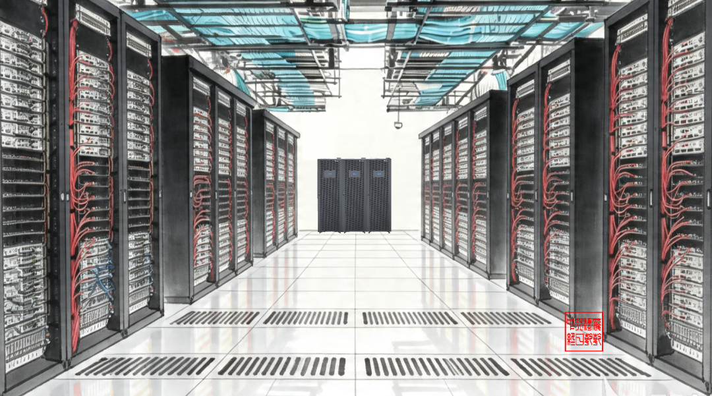

在数据中心800V HVDC架构演进中，“工频变压器+PFC整流”与“固态变压器（SST）”并非“渐进派与颠覆派”的路线对立，而是同一目标下基于不同集成度与转换级数的双路径共生方案。
一、技术路径分歧
路径一：工频降压+PFC整流（分立式低频隔离）
-
原理：市电（10kV/35kV）经工频变压器降至低压交流（如480V AC），再由PFC电路整流为800V DC母线。
-
特征：采用传统工频铁芯实现电气隔离，PFC电路分立构建。供应链极度成熟，初始投资低，且沿用传统低压接入规范，电网审批快。但在MW级系统中，多一级转换带来的累积损耗较高，且动态响应慢，难以平抑AI负载的毫秒级波动。
路径二：固态变压器SST（集成式高频隔离）
-
原理：通过高频功率半导体器件（如SiC）直接将中压交流转换为800V DC，省去工频降压环节。
-
特征：单级/少级直转，系统效率大幅提升；高频磁性元件取代工频铁芯，体积缩减60%-90%；具备强智能调控能力，可实现潮流控制与直流直连。但拓扑复杂，含大量有源器件，长期高压大功率可靠性仍需规模化验证。
二、双路径核心维度对比
| 维度 | 工频变压器+PFC整流 | SST固态变压器 | |----------|----------------------|-------------------| |拓扑复杂度 | 多级转换（AC→AC→DC） |单级/少级直转（中压→800V DC）| | 系统效率 |\~92-95%（变压器单机97%-99%）| \~98%+ | | 成本评估 | \~0.15-0.2元/W |\~0.6元/W（约为传统的3-4倍）| | 体积重量 | 庞大（依赖工频铁芯） | 小巧（采用高频磁性元件） | |可靠性/寿命| 极高，寿命可达30-40年 | 长期可靠性待规模化验证 | | 智能调控 | 弱，动态响应慢 | 强，支持毫秒级响应与辅助服务 |
三、产业共生演进与时间表
主流厂商并未在两条路径上非此即彼，而是根据商业化节奏进行分阶段布局，实现平稳过渡：
-
2026-2027年（过渡期）：以Sidecar+800V HVDC（工频降压或简单整流方案）为主。施耐德、维谛、伊顿等均推出此类过渡方案，利用成熟供应链快速响应AI算力爆发需求。
-
2028-2029年（规模化期）：SST进入规模化商用。台达（已有840-3360kVA产品）、华为数字能源等押注SST的厂商开始放量，单级转换的高效率与空间优势在新建超大规模AIDC中显现。
-
2030年及以后（终局期）：SST成为主流架构，工频降压方案退居存量改造及特定低压场景。
四、适用场景定位
-
工频变压器+PFC方案：适合存量机房改造、对初始CAPEX敏感的项目、电网稳定性较好的区域。无需重构运维体系，部署落地快。
-
SST方案：适合新建超大规模AIDC、单机柜功率≥200kW、土地资源紧张的一线城市。其毫秒级响应与高效率能更好地承接未来GPU极化波动的负载需求，并参与电网调峰套利。
最后一句话总结
双路径共生的本质是“当下的确定性交付”与“未来的极致能效”之间的平衡。在AI算力需求倒逼电源架构升级的紧迫窗口期，工频降压方案守住底盘，SST方案开辟上限，两者共同推动数据中心向800V HVDC时代平稳演进，并最终向全高频化、储算一体的高阶形态收敛。
-
SST模块化与成本下探：随着高频磁性材料与高压SiC器件工艺成熟，SST将从定制化工程走向标准化模块（如MW级插拔模组），预计2030年前后成本有望降至目前的50%-60%，彻底打破价格壁垒。
-
“储算一体”深度耦合：针对AI算力毫秒级负载波动，SST的强控能力将推动数据中心从单一“用电负荷”向“虚拟电厂（VPP）”演进。光储充算一体化中，SST将作为核心能量路由器，实现峰谷套利与电网辅助服务。
-
国产高压SiC驱动供应链重塑：国内厂商在1200V及以上SiC MOSFET的突破（如斯达半导等），将大幅降低SST的核心物料成本。国内厂商有望凭借SiC供应链优势，在SST规模化阶段实现从跟随到并跑的弯道超车。
-
工频方案逐步退居备份与隔离：在2030年后的新建超大规模智算中心中，工频变压器或将仅作为极端工况下的物理隔离备份设备存在，主供电回路全面交由高频集成的SST接管。